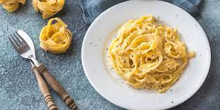

Fettuccine Alfredo

Description
Fettuccine alfredo recipe based on the orginal Italian version of the dish.
Ingredients
- 1 lb. dried fettuccine
- 1/2 lb. unsalted butter (2 sticks)
- 1/2 lb. finely grated parmesan (about 3 1/4 cup)
Steps
- Bring a 6-qt. pot of salted water to a boil. Add fettuccine and cook, stirring occasionally, until pasta is al dente, about 8 minutes.
- Meanwhile, cut butter into thin pats and transfer to a large, warmed platter. Drain pasta, reserving 3⁄4 cup pasta water, and place the pasta over the butter on the platter.
- Sprinkle grated parmesan over the pasta and drizzle with 1⁄4 cup of the reserved pasta water.
- Using a large spoon and fork, gently toss the pasta with the butter and cheese, lifting and swirling the noodles and adding more pasta water as necessary. (The pasta water will help create a smooth sauce.) Work in any melted butter and cheese that pools around the edges of the platter. Continue to mix the pasta until the cheese and butter have fully melted and the noodles are coated, about 3 minutes. (For a quicker preparation, bring the reserved 3⁄4 cup pasta water and the butter to a boil in a 12″ skillet; then add the pasta, sprinkle with the cheese, and toss with tongs over medium-low heat until the pasta is creamy and coated, about 2 minutes.)
- Serve the fettuccine immediately on warmed plates.